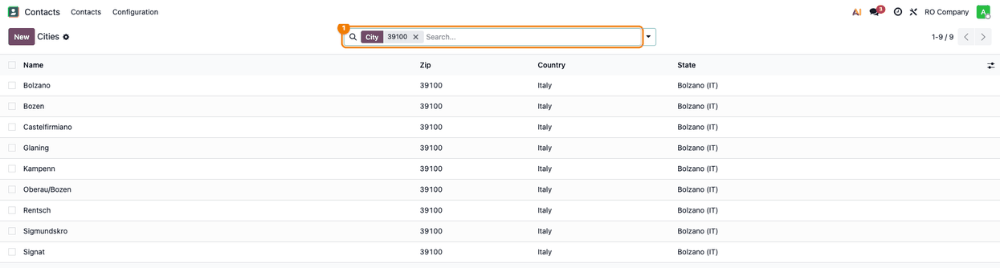
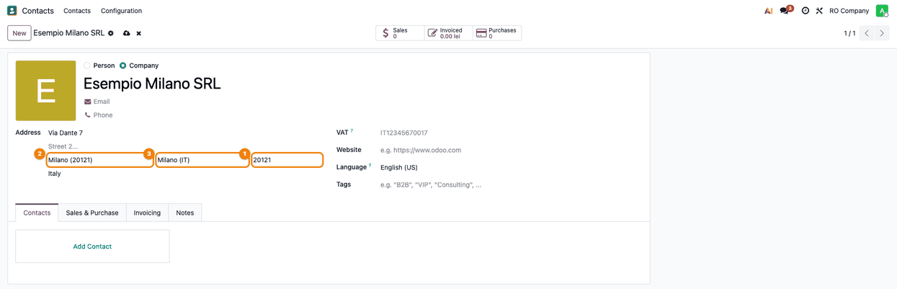
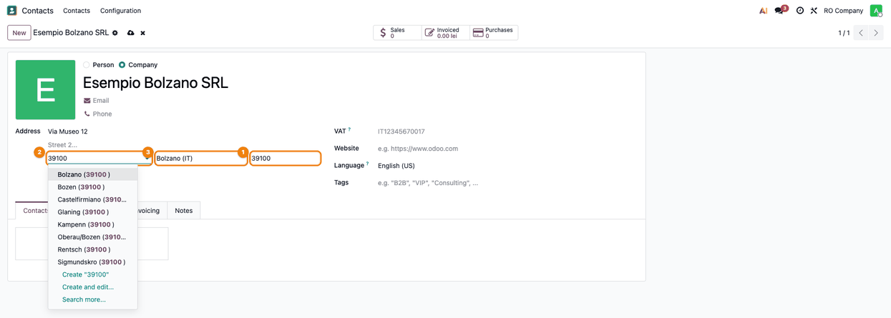
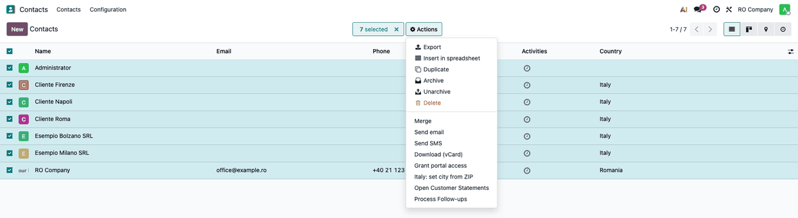
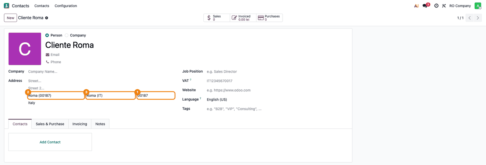

★
Did this module help you? It is free, built and maintained by the Terrabit developers. If it saved you time, a rating on this page is the best way to say thanks — and it helps other Odoo users find it too. Thank you for your support!
Overview
Loads the Italian localities with their postal code (CAP) and province, and fills in the
city and the province of Italian addresses from the CAP.
✓Ships the list of Italian localities (comuni and frazioni) with their CAP, linked to the
provinces already defined in Odoo. The data comes from
GeoNames
(Creative Commons Attribution 4.0).
✓Italy is set to enforce cities: the city of an Italian address is chosen from the list.
✓On the contact form, typing the CAP of an Italian address sets the city and the province.
A CAP shared by several localities sets only the province; the city name, when it matches
one of them (without accents and case), picks the locality. A leading zero lost in an
import is put back ("187" is "00187").
✓The action Italy: set city from ZIP on contacts links the Italian contacts to the city
of their CAP and fills in the province.
✓At install, the Italian contacts are linked: directly on a small database, by the scheduled
action Italy: link contacts to the city of their ZIP in batches on a large one (it
deactivates itself when done).
✓Every form that runs the postal code rules of the contact (for example the delivery details
of an AWB) gets the province filled in, so the shipment can be sent to Italy without
looking up the province by hand.
Usage
- As an administrator, open Contacts → Configuration → Localization → Cities and search
for a CAP: the Italian localities of that postal code are listed with their province.

- Open an Italian contact and type the CAP in the address: the city and the province are
filled in.

- When the CAP is shared by several localities, only the province is filled in; choose the
city from the list (type the CAP or the name in the city field).

- To complete existing or imported contacts, select them in the list and run
Actions → Italy: set city from ZIP.


Versions
19.0.1.0.1 (2026-11-04)
Added
- Italian translation (
i18n/it.po) of the actions.
19.0.1.0.0 (2026-11-04)
Added
- Italian localities with postal code (CAP) and province, from GeoNames.
- City and province filled in from the CAP on Italian addresses; action and scheduled
action to link the existing contacts.
- Consultant sheet (readme/FISA_CONSULTANT.md) and screenshots, in Romanian and English.
Need help getting started?
Our 600+ apps on the Odoo Apps Store are used in Odoo implementations across Europe,
the Americas, Asia and Africa — by companies we have never even met. That is the
advantage of building modules that simply work.
Questions about this module, or need it adapted to your processes?
Write to us — the developers who build it will answer.
Terrabit support →